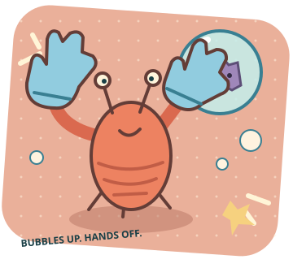

手很想動，但這局要動對地方。
過敏搔癢
大挑戰
癢癢怪又來亂了！
把牠裝進冰冰泡泡，
別讓抓抓手騙走你的連擊。

01 按住藍色怪泡泡裝滿才算封印，提前放開會重來。
02 別碰紅色手抓抓誘惑會加警報，放著讓它離開。
03 守住三個區域倒數結束時達到封印目標，警報不能滿格。
觸控／滑鼠按住九宮格；鍵盤按住 1–9，依畫面由左到右、由上到下排列。也可用 QWE／ASD／ZXC。P／Esc 暫停；切換分頁會自動暫停。
虛構反應遊戲，不是過敏測驗或治療建議。警報值與分數只屬於遊戲；無帳號、不儲存、不上傳。
倒數 18s封印 0 / 4連擊 0分數 0
手先休息，怪也等你。
倒數、警報與癢癢怪都已暫停。
找到藍色癢癢怪，按住到泡泡裝滿！
藍怪：按住裝滿泡泡 · 紅手：不要碰 · 放開會中斷充能